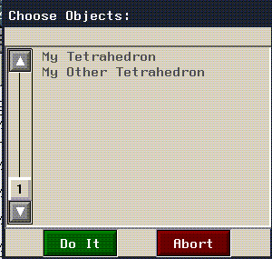
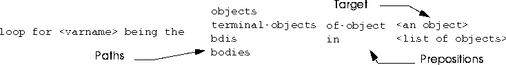

Bodies contain geometrical information which defines the basic relationships between the components of an entity, such as a polyhedron.
A Quick Review of Bodies and Objects
Three dimensional objects are created in N·World using N-Geometry. Using Lisp programs, you can expand this interface or delve beneath it to gain greater control over the objects you create.
Getting Started
For the following examples, run N·World from within Xemacs in the manner described in Chapter 3, "Creating N·World Code."
USER(6): :pa GEOMETRY
GEOMETRY(7):
To review, simple objects which are viewable in N·World have three major components:
Creating Simple Objects
The procedure for creating a simple object using Lisp mirrors this structural hierarchy:
2. Use the body to make an object.
3. Make the new object viewable.
Make Functions for Polyhedra
The functions which create bodies are called make-functions. Each geometric primitive has its own make function. All of these functions take at least one argument, usually the radius of the completed body. In our examples, we'll be creating a tetrahedron with a radius of 10.0 units. Some objects, like cylinders and spheres, take additional arguments to define.
1. Create a body with 3D:MAKE-TETRAHEDRON function.
(3D:MAKE-TETRAHEDRON 10.0)
#<POLYHEDRON 7>
Binding Bodies to Variables
In this example, however, we just called the make function without making any provisions for keeping track of the resulting body afterward. Fortunately, Lisp remembers the last three values returned by user functions. Lisp assigns the most recent value to the variable *, the second-most recent to **, and the third most recent to ***.
1. Bind a new body to a variable.
GEOMETRY(12): (setf mytetra *)
#<POLYHEDRON 7>
mytetra is now bound to the actual body of the object represented by *, not the printed representation.
You can also bind a new body to a variable when you create it. For example:
GEOMETRY(13): (setf mytetra (make-tetrahedron 10.0))
#<POLYHEDRON 8>
mytetra will return the same value, namely, the printed representation of the tetrahedron's body. Binding a variable to a body is not the most efficient method for keeping track of it. However, for now it provides a handy way of referring to the bodies and objects we're creating.
Use
Creating Objects3D:MAKE-OBJECT to create objects which reference bodies:
(3D:MAKE-OBJECT body &OPTIONAL name class)
GEOMETRY(19): (MAKE-OBJECT mytetra)
#<OBJECT "Polyhedron-Object" (dead) @ #x19ad85d2>
GEOMETRY(20): (setf mytetraobject (MAKE-OBJECT mytetra))
#<OBJECT "Polyhedron-Object" (dead) @ #x19ae953a>
GEOMETRY(21):(setf mytetraobject
(make-object mytetra "My Tetrahedron"))
#<OBJECT "My Tetrahedron" (dead) @ #x19b11962>
Viewing Objects
Why is our tetrahedron "dead"? It hasn't yet been added to the view.
1. Use 3D:ADD-OBJECT-TO-VIEW to make the object viewable in the geometry window.
GEOMETRY(22): (3D:ADD-OBJECT-TO-VIEW mytetraobject)
Adding My Tetrahedron, and inserting bdi.
#<OBJECT "My Tetrahedron" @ #x19b11962>
3D:REDRAW-SCENE.
GEOMETRY(23): (3D:REDRAW-SCENE *camera*)
3D:ADD-OBJECT-TO-VIEW does not return a value, but it does produce two important side-effects:
Once you've created an object, you'll need to have a means of referring to it before you can manipulate it. You can reference bodies and objects explicitly by binding them to symbols, as we did in the examples above. However, this requires that you remember which symbol you assigned to an object, and type its name every time you wish to manipulate it. You can avoid this tedium by selecting an item interactively in the geometry window.
Selecting Items
Selecting Bodies Interactively
Whenever you select an item in the geometry window, the special variable ? is set to that object. In fact, Lisp keeps track of the last three items you've selected. Two question marks (??) refer to the second-to-last item selected, while three (???) refer to the item selected third-to-last. You can use this symbol to "grab" an item and perform some operation on it. For example;
To select the body of the tetrahedron we created in the example above:
1. (click-l) on bodies in the sensitivity element menu bar at the top of the Geometry window.
2. (Click-l) on the body of the tetrahedron in the Geometry window.
3. In Xemacs, evaluate the value of ?.
GEOMETRY(25): ?
#<POLYHEDRON 8>
? again.
GEOMETRY(26): ?
#<EDGE 1>
??, Lisp returns the printed representation of the edge you selected earlier:GEOMETRY(28): ??
#<EDGE 1>
???, Lisp returns the body you selected first.GEOMETRY(29): ???
#<POLYHEDRON 8>
(move ? 10.0 10.0 10.0)
(move #<EDGE 3> 1 1 1)
Referencing Elements Symbolically
You can also specify an item by referencing the variable whose value you set to that item. For example, when we created the tetrahedron, we bound the variable mytetra to its body. If you evaluate this variable, Lisp returns the printed representation of the body.
GEOMETRY(32): mytetra
#<POLYHEDRON 8>
mytetraobject bound to its object. We can reference the body or the object of our tetrahedron separately if we choose to do so. For example, you can transform the object by moving it with the move command.
(move mytetraobject 10.0 10.0 10.0)
(move mytetra 10.0 10.0 10.0)
Referencing Objects by Name
Binding variables to objects and bodies provides an easy way of refer to these items. However, it fails to take advantage of Lisp's ability to accept the values returned by one function as arguments to another.
GEOMETRY(53): (3D:OBJECT-NAMED "My Tetrahedron")
#<OBJECT "My Tetrahedron" @ #x1a183a42>
Selecting Objects From a Menu
Earlier we learned that one of the side-effects of add-object-to-view was to add an object to the list of known objects, bound to the global variable *global-object-list*. 3D:CHOOSE-OBJECT uses this list to build a pop-up menu, from which you can select an object.
GEOMETRY(64): (3D:CHOOSE-OBJECT t)
6. (CLICK-L) on an object to select it.
7. The function returns the object.
GEOMETRY(175): : (3d:choose-object t)
#<OBJECT "Polyhedron-Object" @ #x19147cc2>
#<OBJECT-MENU-FIELD "Polyhedron-Object" :OFF 3105301062>
#(USER-INTERFACE:MOUSE-BUTTON :LEFT 0
3D:CHOOSE-OBJECTS works much the same way as choose-object, but can return a list of objects. Evaluating this function:
GEOMETRY(189): (3D:CHOOSE-OBJECTS t)

1. (CLICK-L) on the objects you wish to select
GEOMETRY(204): (choose-objects t)
(SELECTED #<OBJECT "My Tetrahedron" (multiple) @ #x13d4229a>
#<OBJECT "Polyhedron-Object" (multiple) @ #x13d4227a>
choose-objects function returns a list of objects instead of a single object. As a result, be careful that any functions to which you pass the result of choose-objects are prepared for a list. See "Getting the Objects of a Compound Object," on page 7-20 for examples of traversing lists of objects.
There are several powerful tools you can use to find out details about the internal structure of an object. Among the simplest to use is the
Finding Out about Objects with DescribeUSER:DESCRIBE function. Use it to examine our sample compound object in more detail.
1. (CLICK-L) on Object in the Sensitivity bar.
2. (CLICK-L) on the compound object you created earlier.
GEOMETRY(6): (d ?)
#<OBJECT "Octahedron Group" (multiple) @ #x1a6b1ae2> is an instance of
#<STANDARD-CLASS OBJECT>:
The following slots have :INSTANCE allocation:
PROPERTY-LIST (:HIGHLIGHTED NIL :MENU-FIELD
#<OBJECT-MENU-FIELD "Octahedron Group" :OFF 3234642052>
VIEWABLE T)
NAME "Octahedron Group"
REGISTER-P T
CACHED-TAG NIL
UNIQUE-ID ("/ngc7/people/bryan/" :OBJECT "Octahedron Group")
SUPERIOR NIL
BODY (#<OBJECT "Octahedron" @ #x1a61176a>
#<OBJECT "Tetrahedron" @ #x1a6025c2>
#<OBJECT "Cube" @ #x1a5da90a>)
ATTRIBUTE-PLIST NIL
INIT-MATRIX NIL
BODY-MATRIX #(1.0 0.0 0.0 0.0 0.0 1.0 0.0 0.0 0.0 0.0 1.0 0.0 0.0
0.0 0.0 1.0 3.644722e-40)
BASE-MATRIX #(1.0 0.0 0.0 0.0 0.0 1.0 0.0 0.0 0.0 0.0 1.0 0.0 0.0
0.0 0.0 1.0 3.644722e-40)
#<OBJECT "Octahedron Group" (multiple) @ #x1a6b1ae2>
The elements of a polyhedron are vertices, edges, and faces. These elements are stored in a circular, double-pointed list. These lists are called element-rings. The element rings are ordered in "last-added-first" order. In other words, the last element added to the polyhedron is the first element in the list. When traversing elements, you'll need to decide whether to proceed in this order or in the reverse order, "first-added-first."
Traversing Elements of Polyhedra
The primary tool you'll use for traversing elements of polyhedra are special loop iteration forms developed by Nichimen Graphics, and referred to collectively as LOOP macro forms. These forms are described in detail in Chapter 11, "Traversing Elements,"
Traversing Vertices
To traverse the vertices of a polyhedron in "last-added-first" order, use the VERTEX-RING-ELEMENTS loop iteration path. For example,
(loop for verts being the vertex-ring-elements of-polyhedron (make-tetrahedron 10.0)
do
(format t "Vertex: ~a~%" verts))
Vertex: #<VERTEX 4 ( -8.16 -3.33 -4.71)>
Vertex: #<VERTEX 3 ( 8.16 -3.33 -4.71)>
Vertex: #<VERTEX 2 ( 0.00 -3.33 9.43)>
Vertex: #<VERTEX 1 ( 0.00 10.00 0.00)>
NIL
VERTEX-REVERSE-ELEMENTS loop iteration path:
(loop for verts being the vertex-reverse-elements of-polyhedron
(make-tetrahedron 10.0)
do
(format t "Vertex: ~a~%" verts))
Vertex: #<VERTEX 1 ( 0.00 10.00 0.00)>
Vertex: #<VERTEX 2 ( 0.00 -3.33 9.43)>
Vertex: #<VERTEX 3 ( 8.16 -3.33 -4.71)>
Vertex: #<VERTEX 4 ( -8.16 -3.33 -4.71)>
NIL
verts in this example) is defined only within the body of the macro.
Traversing Faces
You traverse faces of a polyhedron in last-added-first order in much the same way using the face-ring-elements loop iteration path:
(loop for faces being the face-ring-elements of-polyhedron (make-tetrahedron 10.0)
do
(format t "Face: ~a~%" faces))
Face: #<FACE 4>
Face: #<FACE 3>
Face: #<FACE 2>
Face: #<FACE 1>
NIL
FACE-REVERSE-ELEMENTS loop iteration path produces a list in first-added-first order.
Traversing Elements of a Face
You can traverse through the vertices which make up a face by looping through the faces of a polyhedron, and then through the vertices of each face, e.g.
(loop for faces being the face-ring-elements of-polyhedron
(make-tetrahedron 10.0)
do
(format t "Face: ~a~%" faces)
(loop for verts being the component-vertices of-face faces
do
(format t "Vert: ~a~%" verts)))
Face: #<FACE 4>
Vert: #<VERTEX 2 ( 0.00 -3.33 9.43)>
Vert: #<VERTEX 3 ( 8.16 -3.33 -4.71)>
Vert: #<VERTEX 4 ( -8.16 -3.33 -4.71)>
Face: #<FACE 3>
Vert: #<VERTEX 1 ( 0.00 10.00 0.00)>
Vert: #<VERTEX 4 ( -8.16 -3.33 -4.71)>
Vert: #<VERTEX 3 ( 8.16 -3.33 -4.71)>
Face: #<FACE 2>
Vert: #<VERTEX 1 ( 0.00 10.00 0.00)>
Vert: #<VERTEX 2 ( 0.00 -3.33 9.43)>
Vert: #<VERTEX 4 ( -8.16 -3.33 -4.71)>
Face: #<FACE 1>
Vert: #<VERTEX 1 ( 0.00 10.00 0.00)>
Vert: #<VERTEX 3 ( 8.16 -3.33 -4.71)>
Vert: #<VERTEX 2 ( 0.00 -3.33 9.43)>
NIL
CCW-COMPONENT-VERTICES path.
Loop forms such as the ones we've just described are useful for stepping through the components of a polyhedron. Because these are macro forms, however, the data they retrieve is limited in scope to within the body of the macro form. Occasionally, you may want to create more lasting collections of elements in the form of lists. It is correct to use the
Collecting the Elements of Polyhedracollect function within the body of a macro to create lists of elements. However, the polyhedron class has built-in generic functions for collecting the elements of polyhedra. These generally take the form COLLECT-MY-{target-element}.
Collecting Faces Given a Body
You can collect the faces of a polyhedron using 3D:COLLECT-MY-FACES:
(setf list-of-faces (3d:collect-my-faces (make-tetrahedron 10.0)))
(#<FACE 4> #<FACE 3> #<FACE 2> #<FACE 1>)
Collecting Faces GIven an Edge
Given an edge, you can collect the faces to the left and to the right with these two functions:
(GET-LEFT-FACE edge)
(GET-RIGHT-FACE edge)
Collecting Vertices
You can collect the vertices of a face using 3D:COLLECT-MY-POINTS.
(3d:collect-my-points (make-tetrahedron 10.0))
(#<VERTEX 4 ( -8.16 -3.33 -4.71)> #<VERTEX 3 ( 8.16 -3.33 -4.71)>
#<VERTEX 2 ( 0.00 -3.33 9.43)> #<VERTEX 1 ( 0.00 10.00 0.00)>)
COLLECT-MY-POINTS.
(3D:COLLECT-MY-POINTS (first (collect-my-faces (make-tetrahedron 10.0))))
Which returns the list:
(#<VERTEX 2 ( 0.00 -3.33 9.43)>
#<VERTEX 3 ( 8.16 -3.33 -4.71)>
#<VERTEX 4 ( -8.16 -3.33 -4.71)>)
Grids behave identically to polyhedra for the purposes of collecting elements. All of the loop iteration paths and collect functions specified above will work with grids as well as polyhedra.
Traversing Grids
Wireframes are non-hierarchical lists of segments. You can return a list of the segments which make up a wire frame with the
Traversing Wireframes and Skeletons3D:GET-SEGMENT-LIST function:
(3d:get-segment-list
(3d:make-wire-frame-from-wire (3d:make-wire)))
(#<WF-SEGMENT 50> #<WF-SEGMENT 49> #<WF-SEGMENT 48> #<WF-SEGMENT 47>#<WF-SEGMENT 46> #<WF-SEGMENT 45> #<WF-SEGMENT 44> #<WF-SEGMENT 43> #<WF-SEGMENT 42> #<WF-SEGMENT 41> ...)
(3d:get-segment-list (3d:make-human-skeleton))
(#<BONE "Head" 435382370> #<BONE "Neck" 435381146> #<BONE "Chest" 435379922> #<BONE "RightHand" 435378314> #<BONE "RightForeArm" 435377090> #<BONE "RightUpperArm" 435375866> #<BONE "RightCollar" 435374642> #<BONE "RightChest" 435373418> #<BONE "LeftHand" 435371922> #<BONE "LeftForeArm" 435370698> ...)
(loop for bone in (get-segment-list (make-human-skeleton))
do
(format t "Bone: ~a~%" bone))
Bone: #<BONE "Head" 435523058>
Bone: #<BONE "Neck" 435521834>
Bone: #<BONE "Chest" 435520610>
Bone: #<BONE "RightHand" 435519002>
Bone: #<BONE "RightForeArm" 435517778>
Bone: #<BONE "RightUpperArm" 435516554>
Bone: #<BONE "RightCollar" 435515330>
Bone: #<BONE "RightChest" 435514106>
Bone: #<BONE "LeftHand" 435512610>
Bone: #<BONE "LeftForeArm" 435511386>
Bone: #<BONE "LeftUpperArm" 435510162>
Bone: #<BONE "LeftCollar" 435508938>
Bone: #<BONE "LeftChest" 435507714>
Bone: #<BONE "TopHip" 435506490>
Bone: #<BONE "RightToes" 435504786>
Bone: #<BONE "RightFootTop" 435503562>
Bone: #<BONE "RightFoot" 435502170>
Bone: #<BONE "RightTibia" 435500946>
Bone: #<BONE "RightFemur" 435499722>
Bone: #<BONE "RightHip" 435498498>
Bone: #<BONE "LeftToes" 435497034>
Bone: #<BONE "LeftFootTop" 435495810>
Bone: #<BONE "LeftFoot" 435494418>
Bone: #<BONE "LeftTibia" 435493194>
Bone: #<BONE "LeftFemur" 435491970>
Bone: #<BONE "LeftHip" 435490746>
NIL
3D:GET-BONES-IN-MODIFICATION-ORDER.
(loop for bones in (get-bones-in-modification-order (make-human-skeleton))
do
(format t "Bone: ~a~%" bones))
Bone: #<BONE "TopHip" 436228498>
Bone: #<BONE "Chest" 436242618>
Bone: #<BONE "Neck" 436243842>
Bone: #<BONE "Head" 436245066>
Bone: #<BONE "LeftCollar" 436230946>
Bone: #<BONE "LeftUpperArm" 436232170>
Bone: #<BONE "LeftForeArm" 436233394>
Bone: #<BONE "LeftHand" 436234618>
Bone: #<BONE "RightCollar" 436237338>
Bone: #<BONE "RightUpperArm" 436238562>
Bone: #<BONE "RightForeArm" 436239786>
Bone: #<BONE "RightHand" 436241010>
Bone: #<BONE "LeftFemur" 436213978>
Bone: #<BONE "LeftTibia" 436215202>
Bone: #<BONE "LeftFoot" 436216426>
Bone: #<BONE "LeftToes" 436219042>
Bone: #<BONE "RightFemur" 436221730>
Bone: #<BONE "RightTibia" 436222954>
Bone: #<BONE "RightFoot" 436224178>
Bone: #<BONE "RightToes" 436226794>
NIL
2. to Bones for which DOFs have been specified
3. alphabetically (e.g., LeftFemur before RightFemur)
More Ways to Collect Elements
Be sure to review Chapter 11, "Traversing Elements," for a more complete description of loop paths, as well as information about time-saving short forms you can use.
Multiple, or compound, objects have other objects as their bodies instead of polyhedra. Before you can work efficiently with multiple objects, you'll need to know how to find your way around in an object hierarchy. Before we begin, you might want to review Figure 6.5, which shows an example of the structure of a top-level, compound object.
Manipulating Objects
1. (CLICK-L) on Add New Object in the Geometry menu.
4. Repeat steps 1-3 to create a cube, a tetrahedron, and an octahedron.
5. (CLICK-L) on Restructure in the Geometry menu.
6. (CLICK-L) on each of the three objects in the dialog, then (CLICK-L) on Do It.
8. Type the name of your new object and (CLICK-L) on Restructure.
Determining Position in a Hierarchy
Before you can work efficiently with compound objects, you'll need to be able to reliably and efficiently determine
To determine whether our example object is a top-level object, bind it to the question mark variable and evaluate
3D:TOP-LEVEL-OBJECT-P on it:
(3D:TOP-LEVEL-OBJECT-P ?)
T
NIL. There is a corresponding function for determining whether a given object resides at the bottom of a hierarchy, 3D:TERMINAL-OBJECT-P.
(3D:TERMINAL-OBJECT-P ?)
NIL
Finding Superior and Inferior Objects
For any given object in a hierarchy which is not a top-level object, superior objects are those which include the object in their body. In our example, the cube, tetrahedron, and icosahedron all have "Octahedron Group" as their superior objects. Use 3D:GET-SUPERIOR function to return the superior object of these objects.
1. (CLICK-L) on Objects in the Geometry sensitivity bar.
3. Evaluate 3D:GET-SUPERIORS on ?.
3D:GET-SUPERIORS returns a list of all objects superior to the cube object:
(3D:GET-SUPERIORS ?)
(#<OBJECT "Octahedron Group" (multiple) @ #x13b1a9ea>)
GET-INFERIORS. Try get-inferiors with the cube object:
(3d:get-inferiors ?)
NIL
get-inferiors work, we'll have to set ? to a compound object.
1. (CLICK-L) on Objects in the geometry main menu.
2. (CLICK-L) on "Octahedron Group" to select it.
(#<OBJECT "Octahedron" @ #x13b1a9fa> #<OBJECT "Tetrahedron" @ #x13b1a9da> #<OBJECT "Cube" @ #x13b1a812>)
Now try evaluating get-superiors on "Octahedron Group"
NIL
NIL, because "Octahedron Group" is a top-level object with no superiors
Finding the Body of an Object
The find-body function returns the body of a terminal object, bdi, body, or element of a body. However, if you pass a compound object to find-body, the function returns NIL. This behavior provides a handy way of determining whether an object is a terminal object or not. For example, if we evaluate find-body on our compound object "Octahedron Group", the function returns NIL.
If you want to find the bodies in a compound object, you'll have to use
3d:collect-bodies. Assuming we've bound ? to our octahedron group, this function returns a flat list of bodies, e.g.
(3d:collect-bodies (object-named "Octahedron_Group"))
(#<POLYHEDRON 11> #<POLYHEDRON 9> #<POLYHEDRON 7>)
(cond ((setq bod (find-body object)))
((setq bod (collect-bodies object)))
)
Finding Objects of a Body
Bind ? to the tetrahedron in the Geometry window. 3D:FIND-OBJECTS-OF-BODY returns a list of all objects which reference the tetrahedron.
(3D:FIND-OBJECTS-OF-BODY ?)
(#<OBJECT "Tetrahedron" @ #x13b25612>
#<OBJECT "Tetrahedron" @ #x13b1c3ea>)
Finding BDIs of a Body
BDIs can also serve as pointers to objects which reference a given body. 3D:GET-SISTERS returns a list of BDIs which reference a given body. Again, for the tetrahedron:
(3D:GET-SISTERS ?)which returns a list of the BDIs that reference the tetrahedron:
(#<BDI (Tetrahedron) @ #x13b25452>#<BDI (Tetrahedron) @ #x13b31082> Finding the Body Referenced by a BDI
Given a BDI, you can obtain the body that BDI points with 3D:GET-BODY. To use the following example, you must first bind a variable to a BDI.
(setq testbdi (first (3d:get-sisters ?)))
get-body with the variable testbdi.
(3d:get-body testbdi)
#<POLYHEDRON 17>
Finding the Object Referenced by a BDI
Given a BDI, you can obtain the object which that BDI points to (its superior) using 3D:GET-OBJECT function.
(get-object testbdi)
#<OBJECT "Tetrahedron" @ #x13b25612>
Finding Top-Level Objects of a BDI
Given a BDI, 3D:GET-TOP-LEVEL-OBJECT returns the top-level object in the hierarchy which references the BDI. For example:
(3D:GET-TOP-LEVEL-OBJECT testbdi)
#<OBJECT "Octahedron Group" (multiple) @ #x13b20832>
Loop macros are the key to traversing Object Hierarchies. Using combinations of loop macro forms, or nested loops, you can grab any object, body, or bdi in a given object hierarchy. You can use loop macros to return:
Traversing Object Hierarchies
Getting the Objects of a Compound Object
For the following examples, we've bound our sample compound object ("Octahedron object") to ?. We can loop through and print a list of the objects which make up "Octahedron objects" using the following loop macro form:
(loop for objvar of-object ?
do
(format t "Body object:~a~%" objvar))
Body object:#<OBJECT "Octahedron Group" (multiple) @ #x13b20832>
Body object:#<OBJECT "Tetrahedron" @ #x13b25612>
Body object:#<OBJECT "Octahedron" @ #x13b25602>
Body object:#<OBJECT "Cube" @ #x13b27a82>
NILget-inferiors to access the inferior objects, but this function returns a list. Fortunately, you can use the preposition in to direct the loop within a list:
(loop for objvar being the objects in (get-inferiors ?)
do
(format t "Body object:~a~%"objvar))
Body object:#<OBJECT "Cube" @ #x13b27a82>
Body object:#<OBJECT "Octahedron" @ #x13b25602>
Body object:#<OBJECT "Tetrahedron" @ #x13b25612>
NIL
Getting the Terminal Objects of a Hierarchy
Loop macros will also return the terminal objects of a hierarchy. For example
(loop for termobjs being the terminal-objects of-object ?
do
(format t "Terminal object:~a~%" termobjs))
Terminal object:#<OBJECT "Cube" @ #x13b27a82>
Terminal object:#<OBJECT "Octahedron" @ #x13b25602>
Terminal object:#<OBJECT "Tetrahedron" @ #x13b25612>
NIL
Getting the Bodies of Objects in a Hierarchy
Use the bodies path to return the bodies of objects in an object hierarchy.
(loop for geobodies being the bodies of-object ?
do
(format t "Geobody:~a~%" geobodies))
Geobody:#<POLYHEDRON 13>
Geobody:#<POLYHEDRON 15>
Geobody:#<POLYHEDRON 17>
NIL
Getting the BDIs in a Hierarchy
Use the bdis path to return the BDIs in a hierarchy.
(loop for bdivar being the bdis of-object ?
do
(format t "BDI: ~a~%" bdivar))
BDI: #<BDI (Cube) @ #x13b31042>
BDI: #<BDI (Octahedron) @ #x13b30fe2>
BDI: #<BDI (Tetrahedron) @ #x13b25452>
NIL
Loop Paths for Object Hierarchies Summarized
The loop paths we've just presented should give you access to all the components of any object hierarchy. Figure 7.4 summarizes loop macro forms for traversing objects

Non-Standard Loop Paths
You may occasionally need to traverse hierarchies along paths which are not specified in existing loop macro forms. You'll need to be creative in figuring out how to accomplish these tasks as they arise, but here are a few examples.
Getting Superior Objects of a Body
You can combine the objects path and the preposition in to return the objects which reference a body. For example, if we set ? to the tetrahedron by selecting the tetrahedron in the Geometry frame:
(loop for Superobjs being the objects in (find-objects-of-body ?)
do
(format t "Superior Objects: ~a~%" Superobjs))
Superior Objects: #<OBJECT "Tetrahedron" @ #x13b1c3ea>
Superior Objects: #<OBJECT "Tetrahedron" @ #x13b25612>
NIL
Getting Top Level Objects of a Body
There are no loop forms for returning top level objects given a body. However, you can use standard loop paths to return top-level objects. The key is to use the get-sisters function to return the BDIs which point to the body in question. Given these BDIs, you can use GET-TOP-LEVEL-OBJECT to return all the top-level objects which reference a given body.
(loop for bdi in (get-sisters ?) for topobj = (get-top-level-object bdi)
do
(format t "~a~%" topobj)
)
#<OBJECT "Octahedron Group" (multiple) @ #x13b20832>
#<OBJECT "Octahedron Group<2>" (multiple) @ #x13b1c41a>
NIL
do with COLLECT.
(loop for bdi in (get-sisters ?) collect (get-top-level-object (get-object bdi)))
(#<OBJECT "Octahedron Group" (multiple) @ #x13b20832>
#<OBJECT "Octahedron Group<2>" (multiple) @ #x13b1c41a>)
Copyright © 1996, Nichimen Graphics Corporation. All rights reserved.